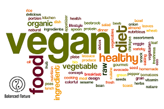

Veganism is a way of living which seeks to exclude all forms of exploitation of, and cruelty to, animals for food, clothing or any other purpose. This includes eating non-meat, non-dairy products; wearing clothing that has no animal products in or on it; buying products that do not contain anything having to do with animals and buying brands that do not test on animals.
To learn more, visit:
Vegan Society - Definition of Veganism